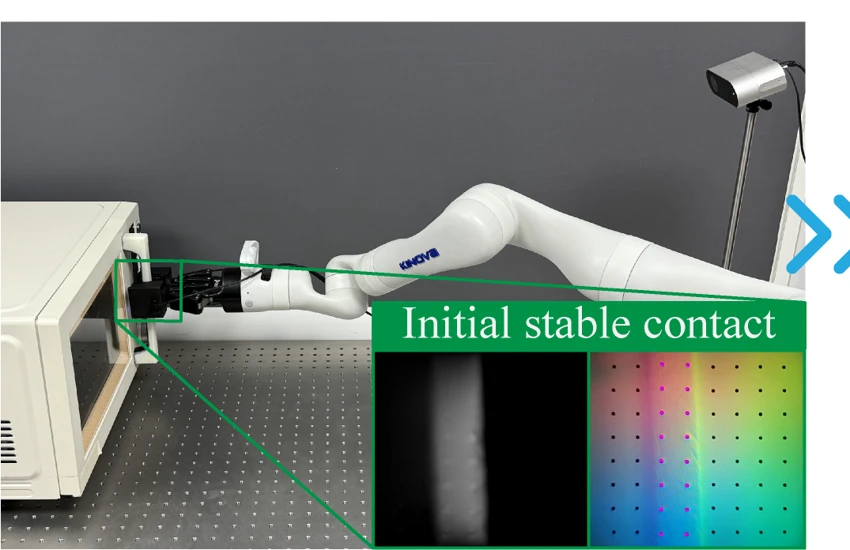
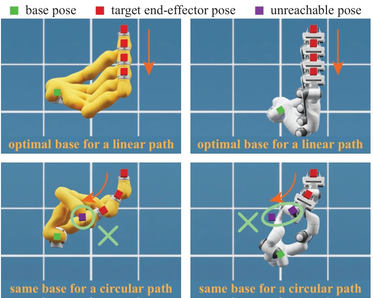
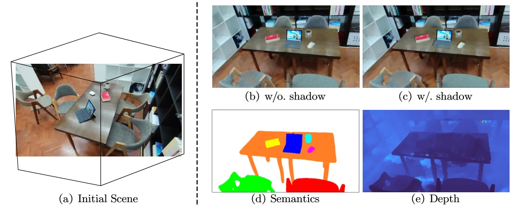

Research interests
- Tactile perception & control
- Robot manipulation
- Motion planning
- Reinforcement learning for robotics
Robotics · Perception · Learning
I’m Sirui (谢斯睿), an MRes student in Bioengineering at Imperial College London, working with Dr. Dandan Zhang in the MSEI Lab. My current research explores active tactile perception of robot–object systems, with broader interests in tactile perception and control, motion planning, and reinforcement learning for robotics.
I received my BArch in Urban Design from Beijing University of Civil Engineering and Architecture in 2026. Previously, I was a research intern at Peking University’s CoRe Lab, advised by Dr. Yixin Zhu, and at AIR, Tsinghua University & Lightwheel AI, advised by Dr. Hao Zhao. My work has spanned robot manipulation, motion planning, and neural scene representations.
Imperial College London
MRes in Bioengineering
Beijing University of Civil Engineering and Architecture
BArch in Urban Design
GPA: 88.69 / 100
Previously studied Vehicle Engineering, 2021–2022.

ICRA 2026
Coarse visual guidance meets precise tactile feedback for manipulating previously unseen articulated objects without explicit kinematic models.

IEEE RA-L 2025
A hierarchical optimization framework jointly solves robot base placement and path planning, without precomputed kinematics databases.

ECCV 2024
Hierarchical scene graphs organize neural radiance fields for controllable scene rearrangement with semantic and physical relationships.
MRes Student · Advisor: Dr. Dandan Zhang
Exploring active tactile perception of robot–object systems, alongside studies in reinforcement learning, research data analysis, and human neuromechanical control and learning.
Research Intern · Advisor: Dr. Yixin Zhu
Developed algorithms for fixed manipulator base placement and investigated 6-DoF object pose estimation under heavy occlusion.
Research Intern · Advisor: Dr. Hao Zhao
Developed a Gaussian Splatting pipeline for 3D scene generation, contributed to NeRF-based simulation for autonomous driving, and led a team building a radar simulation module.
Research Assistant · Advisor: Prof. Yuejia Xu
Facilitated weekly seminars on AI-assisted architectural workflows and collaborated on demonstrations of neural rendering and generative design.
Programming
Python, PyTorch, C/C++; learning Rust.
Research & development
Git, Linux, LaTeX, Markdown.
3D design & rendering
Rhino, Blender, SketchUp, AutoCAD.
I’ve been part of BUCEA’s student orchestra, and have worked on exhibition design, parametric design, and 3D printing.